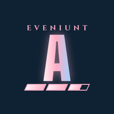

Eveniunt AtelierCrafting solver built on Raphael: every recipe, the in-game macro generator in seven languages, and for expert and Cosmic recipes a reliability check plus a live step-by-step guide that reacts to every condition.
Install it as an app (the Install app button in its header). It works offline after the first visit.
Cosmic Exploration
Step-by-step mission guides for each destination, one offline page per planet.